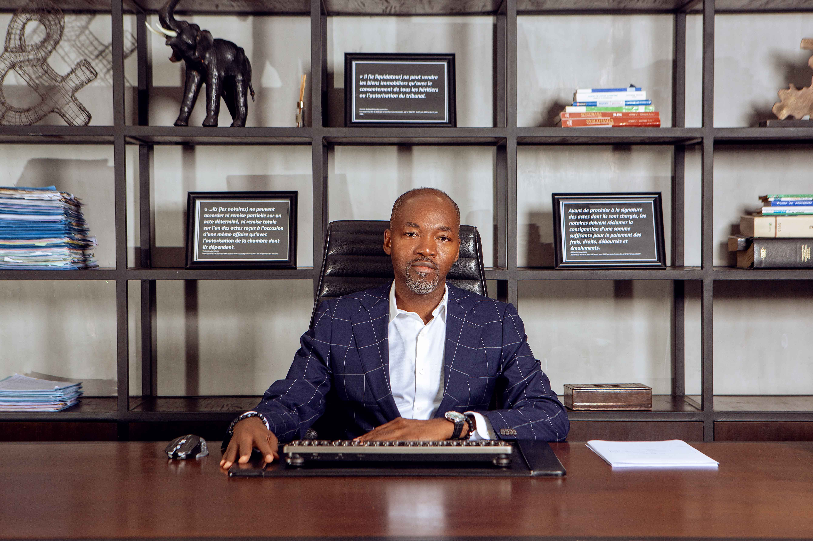

Maître Hermann SINGBO
Qui sommes-nous ?
Diplômé en droit des affaires de l’Université Paris I Panthéon-Sorbonne, où il a acquis une solide expertise dans le domaine juridique et économique international. Avant d’exercer en tant que notaire, il a accumulé plus d’une douzaine d’années d’expérience en tant que juriste et consultant spécialisé en droit des affaires et du continent africain, collaborant notamment avec des cabinets internationaux tels que Joëlle Monlous Law Firm à Paris. Fort de ce parcours, il a fondé son propre cabinet, Notaire Consilium, basé à Cotonou, où il met au service de sa clientèle son savoir-faire, son éthique professionnelle et sa rigueur juridique.
Notre équipe se distingue par sa capacité à offrir des conseils clairs, personnalisés et adaptés aux besoins spécifiques de chaque client. Nous croyons que chaque acte notarial doit protéger vos intérêts tout en respectant vos projets de vie.
Nous intervenons dans divers domaines tels que le droit immobilier, le droit de la famille, le droit des affaires et la gestion des successions et donations. Nos méthodes allient tradition notariale et innovation pour garantir efficacité, transparence et sécurité juridique.
La confiance, la rigueur et l'excellence sont au cœur de notre pratique. Choisir Notaire Consilium, c’est choisir un partenaire fiable pour chaque étape de votre vie, tant personnelle que professionnelle.
Nos services
Droit immobilier
Achat, vente, contrats et sécurisation de vos transactions immobilières.
Droit des affaires
Création d'entreprise, contrats commerciaux et conseil stratégique.
Droit de la famille
Mariage, divorce, adoption, succession — accompagnement complet et sécurisé.
Gestion patrimoniale
Planification et organisation du patrimoine pour protéger vos biens et intérêts.
Ingénierie patrimoniale
Optimisation fiscale et juridique de vos actifs selon vos projets de vie.
Sécurisation juridique
Protection et validation de vos actes juridiques pour éviter tout litige futur.
Droit international privé
Assistance et conseils pour les situations juridiques transfrontalières.